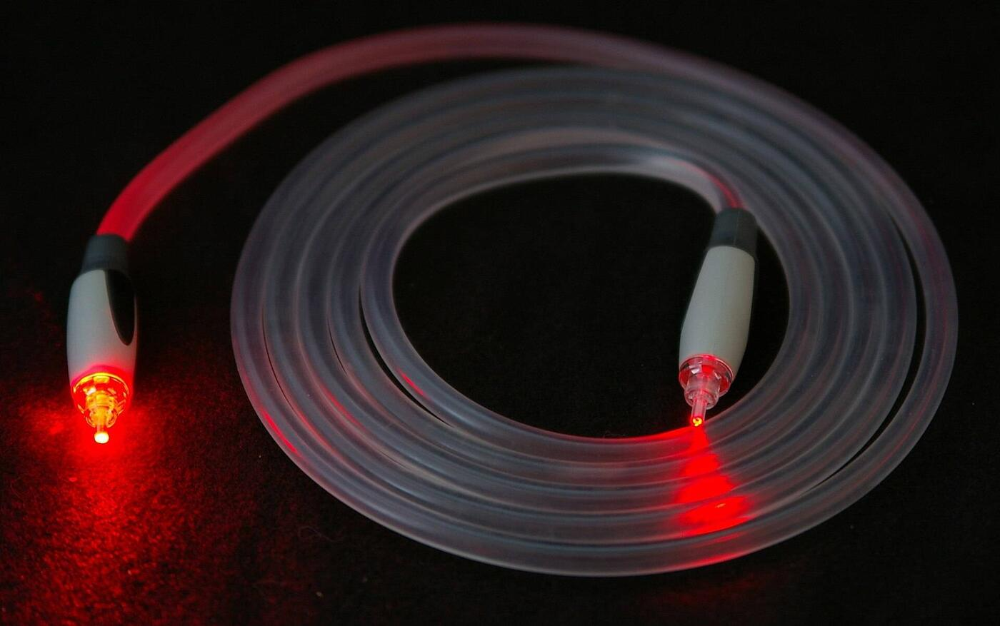
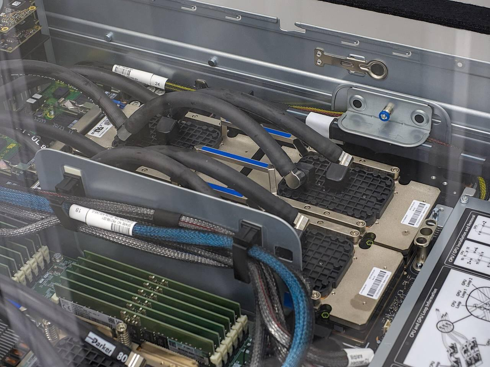
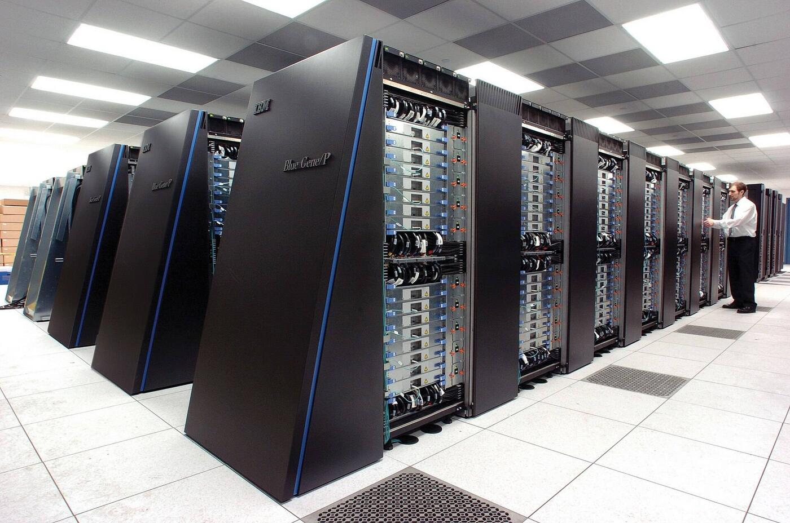
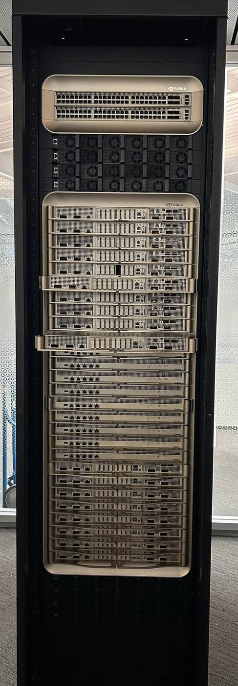
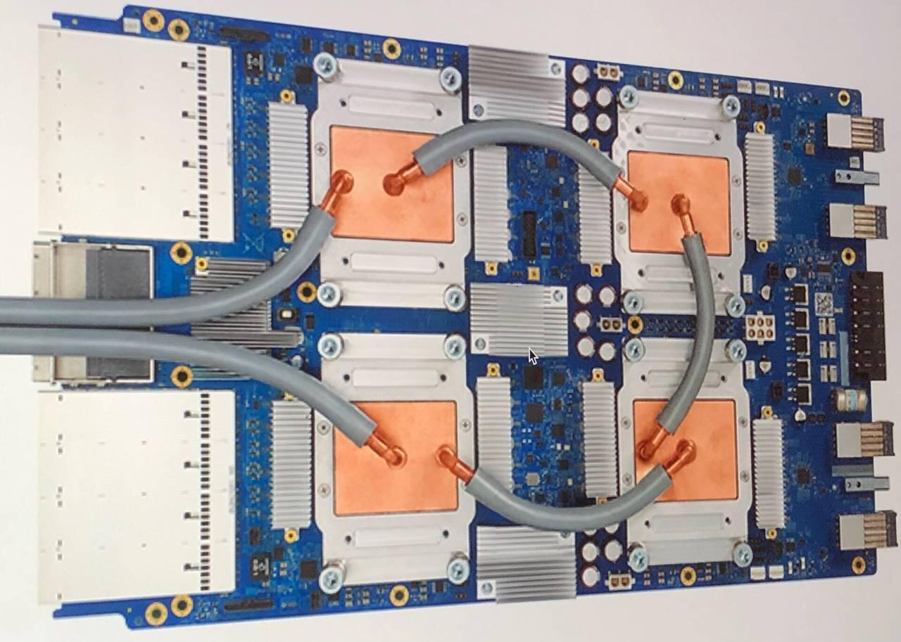
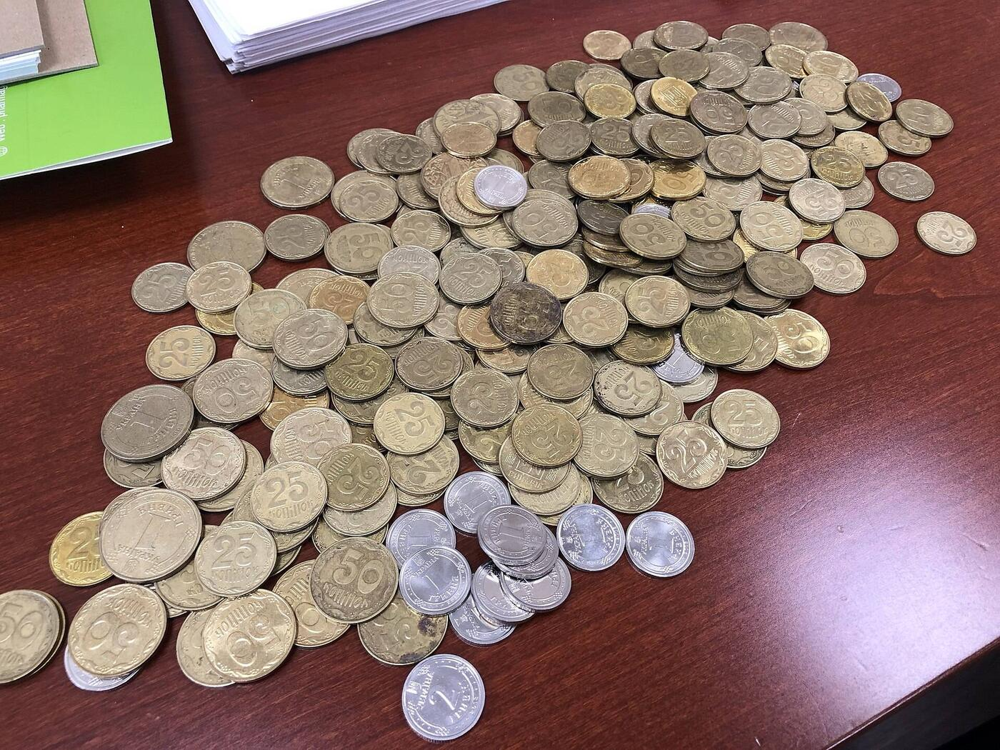
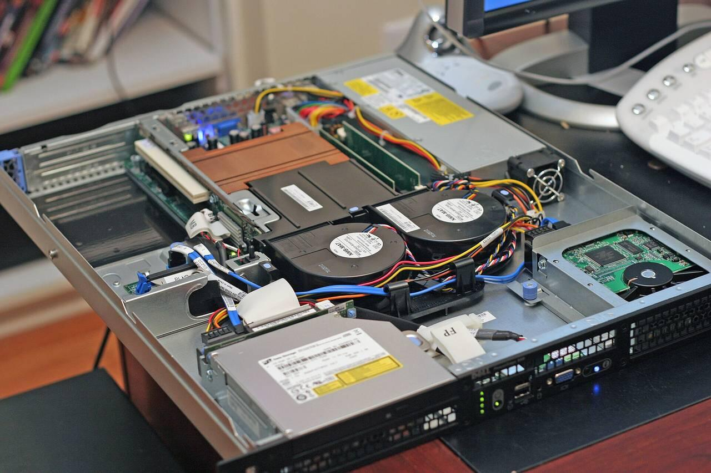
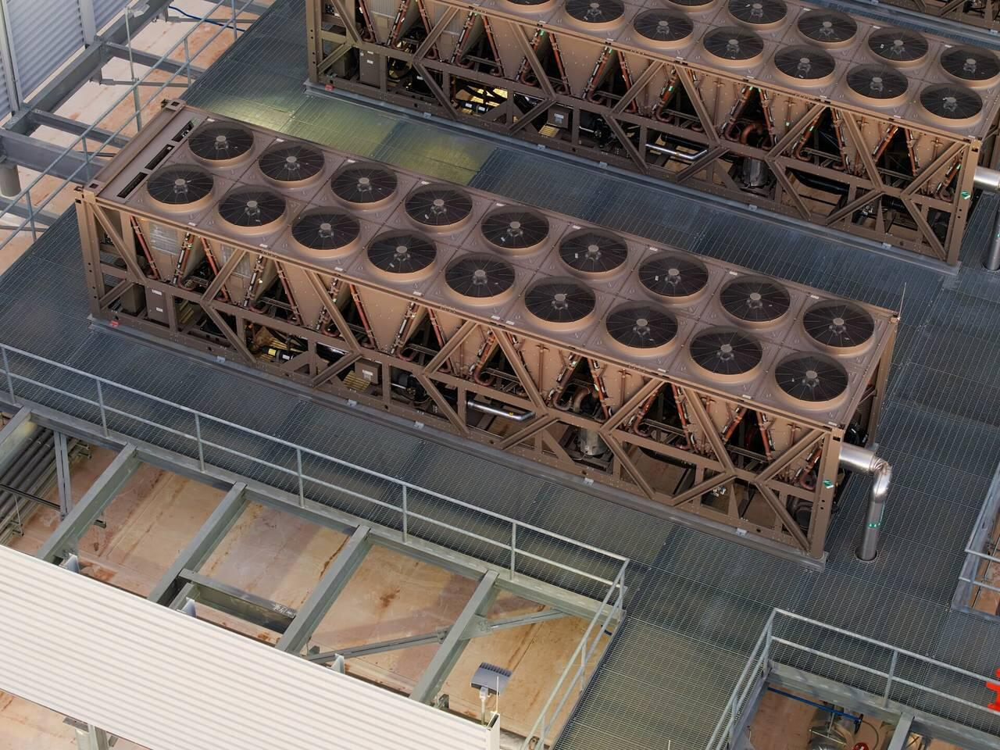

How an AI answers your message
The whole walkthrough as text: 16 chapters, from your message to the chips and back, one token at a time.
01You press Enter
One message, start to finish · Where it happens: Your device
You type a question into a chat and press Enter. A second later, words start appearing, one after another. Where do they come from?
Not from your phone. Your message travels to a data center, where a big AI model runs on special chips, and the answer streams back.

Along the way your words turn into numbers, pass through dozens of layers of maths, and come out as a guess for the next word. Then again, and again.
This walkthrough follows that one message. It starts simple and goes deep: tokens, attention, the chips, their memory, and the tricks that make it fast.

- Your message goes to a data center; the answer is written there and streamed back.
02The trip to the data center
Your message on the move · Where it happens: The internet
Your app wraps the message in an encrypted request and sends it over the internet, like any web page. Issue 06 follows that trip in detail.

It arrives at an AI provider’s servers. A front door checks who you are and your limits, then a scheduler picks a group of chips with room for one more conversation.

Your whole conversation goes with it: earlier questions, earlier answers and any files. A model has no memory between requests; it rereads the conversation every time.

- The request carries the whole conversation; the model has no memory between requests.
03Words become tokens
Cutting text into pieces · Where it happens: A server, on ordinary processors
The model can’t read letters. First a tokenizer cuts your text into tokens: common words, pieces of words, spaces and punctuation.

Common words stay whole. A rare word is split into familiar pieces, so the model never meets a word it can’t handle. The method is called byte-pair encoding.
Anthropic says a token is about 3.5 English characters on its earlier models, and its newest tokenizer makes about 30% more tokens for the same text.
≈ 3.5: English characters per token (earlier Claude models) [4]
Each token is really a number: its place in a fixed list of tens of thousands of pieces, the vocabulary. “Hello” might be one number, “Hellooo” three.
Some tokens are special markers the app adds: where a message starts and ends, and who is speaking, so the model can tell your words from its own.
- A tokenizer cuts text into tokens (about 3.5 English characters each on earlier Claude models).
- Each token is a number in a fixed vocabulary.
04Tokens become meaning
Embeddings: a list of numbers per token · Where it happens: The AI chips
Now the chips take over. Each token number picks out a row in a huge table: a long list of numbers that stands for what the token means. This is its embedding.

How long is the list? Anthropic doesn’t publish Claude’s size, so take a public example: GPT-3 used 12,288 numbers for every token.
12,288: numbers per token in GPT-3 [2]
Words with similar meanings end up with similar lists, like neighbouring houses on a map. Position is mixed in too, so “dog bites man” differs from “man bites dog”.

The original Transformer added each token’s position as waves of different lengths. Newer models use other tricks, but the point is the same: word order matters.
- Each token becomes a long list of numbers, its embedding (12,288 numbers in GPT-3).
05A tall stack of layers
The Transformer · Where it happens: The AI chips
Almost every chat AI today is a Transformer, a design published by Google researchers in 2017. It is a tall stack of identical layers.

GPT-3, for example, has 96 layers and 175 billion parameters: the numbers it learned in training. Every layer reads all the token lists and adds a little understanding.

175 billion: parameters in GPT-3, across 96 layers [2]
Each layer has two parts: attention, where tokens look at each other, and a feed-forward network, where each token is worked on alone. Then on to the next layer.

Each layer adds its result back onto what came in, a “residual connection”, so information can flow straight up through all the layers without getting lost.
The feed-forward part is wide. In GPT-3 it stretches each token’s 12,288 numbers out to 49,152 and back again, and it holds about two-thirds of the parameters.
49,152: numbers inside each feed-forward step (GPT-3) [2]
Training set those parameters by reading huge amounts of text and practising one thing: guessing the next token. Issue 03 tells that story. Here, they are fixed.
- A Transformer is a stack of layers: attention, then a feed-forward network.
- GPT-3: 96 layers, 175 billion parameters.
06Attention
Every token looks back · Where it happens: The AI chips
In “The animal didn’t cross the street because it was too tired”, what is “it”? To know, the model must look back at the other words. That is attention.

Each token makes three small lists: a query (“what am I looking for?”), a key (“what do I contain?”) and a value (“what I can pass on”).
A token’s query is compared with every earlier key. Good matches get more weight, and the token takes a weighted mix of their values. “It” draws mostly on “animal”.
The match scores are scaled and turned into shares that add up to 100% (a “softmax”), and those shares decide how much of each value is mixed in.
Many attention “heads” do this side by side, each tracking something different: grammar, names, what came before. GPT-3 had 96 heads in every layer.
96: attention heads per layer in GPT-3 [2]
A chat model only looks backwards: a token can see earlier tokens, never later ones. That is what lets it write left to right, one token at a time.
Attention has a cost: every token compares itself with every earlier one, so the work grows with the square of the length. Twice the conversation means about four times the attention work.
- Attention lets each token look back at earlier ones using queries, keys and values.
- Many heads work side by side; tokens never see the future.
07It is all multiplication
Grids of numbers · Where it happens: The AI chips
Under the words, it is arithmetic. Making queries, keys and values, mixing them, and the feed-forward step are all matrix multiplications: grids of numbers times grids of numbers.
Each parameter is used about twice per token: one multiply and one add. So a model with 175 billion parameters does about 350 billion operations for every token.
≈ 2: operations per parameter, per token [6]
Where are those parameters? In each GPT-3 layer: four 12,288-by-12,288 grids for attention and two 12,288-by-49,152 grids for the feed-forward. That is about 1.8 billion, times 96 layers.
A few hundred words of answer means hundreds of tokens. That is far more arithmetic than a phone could do quickly, which is why it runs on special chips.

- It is all matrix multiplication: about 2 operations per parameter per token.
08Inside the chip
Thousands of tiny calculators · Where it happens: GPU or TPU, in a server
A regular processor has a few big, clever cores. An AI chip has thousands of small ones built for one job: multiplying grids of numbers, all at once.

NVIDIA GPUs have “tensor cores” that each multiply small blocks of numbers in one step. Google’s TPU uses a “systolic array”, where numbers pulse through a grid of multipliers.

One NVIDIA H100 is rated at about 1,979 trillion 16-bit operations a second, using a sparsity trick. Anthropic says it runs Claude on NVIDIA GPUs, Google TPUs and AWS Trainium.
1,979: trillion 16-bit operations a second, H100 (with sparsity) [7]
Smaller numbers go faster. With 8-bit numbers (FP8) an H100 is rated at about 3,958 trillion operations a second, double its 16-bit figure.
3,958: trillion 8-bit operations a second, H100 (with sparsity) [7]
They are hungry: an H100 can draw up to 700 watts, as much as seven old 100-watt light bulbs, and gets cooled by air or liquid. Issue 01 shows the racks and the cooling.
700 W: maximum power of one H100 [7]
- AI chips have thousands of small cores built for multiplying grids of numbers.
- An H100: up to 700 W.
09Memory is the bottleneck
HBM: stacks of memory beside the chip · Where it happens: Right next to the AI chip
The parameters must sit in memory right next to the chip. AI chips use High Bandwidth Memory: memory dies stacked like a tower, wired straight down through the silicon.
An H100 has 80 GB of it, readable at 3.35 terabytes a second: over 3 gigabytes every thousandth of a second.
3.35 TB/s: memory speed of one H100 (80 GB) [7]
Here is the catch. To write each new token, the chip must read every parameter once. With 16-bit numbers, 175 billion parameters are 350 GB: more than four H100s can even hold.
So writing one answer token is usually limited by how fast memory can be read, not by the arithmetic. That single fact shapes almost every speed trick you will meet.
The KV cache you’ll meet soon takes memory too. If a model were built like GPT-3 with 16-bit numbers, each token would need 2 × 96 layers × 12,288 numbers × 2 bytes: about 4.7 MB.
So GPT-3’s 2,048-token window would need nearly 10 GB of cache for one conversation. Long conversations really do fill up a chip’s memory.
- Parameters live in HBM beside the chip; writing each token means reading them all.
- So decoding is usually limited by memory speed.
10Many chips, one model
Splitting the work · Where it happens: A rack of AI servers
A big model doesn’t fit on one chip, so it is split. Each chip holds a slice of every layer and does its part of every multiplication: tensor parallelism.
Or the layers are shared out in order, like an assembly line, each group of chips passing its results to the next: pipeline parallelism.

The work is also split by people: different groups of chips serve different conversations at the same time, each holding its own copy of the model.
Split chips must talk constantly. H100s link to each other at 900 GB/s over NVLink, many times faster than an ordinary network.

900 GB/s: NVLink between H100 GPUs [7]
The newest racks join 72 GPUs into one giant unit, drawing about 132–140 kW and cooled by liquid, as Issue 01 showed.
72: GPUs in one liquid-cooled rack [15]
- Big models are split across many chips (tensor and pipeline parallelism) linked by fast connections.
11Reading, then writing
Prefill and decode · Where it happens: The AI chips
An answer happens in two phases. First the model reads your whole conversation at once, all tokens in parallel. This is called prefill, and the chips are busy doing maths.
Then it writes, one token at a time: decode. Each new token needs a full pass through every layer, and that pass waits on memory.
That gives two speeds you can feel: the wait for the first word (mostly prefill, longer for a long prompt) and then how fast words flow (decode).
To avoid redoing old work, each layer keeps every earlier token’s keys and values in memory: the KV cache. A new token only computes its own and looks back at the cache.
The cache grows with every token, so very long conversations use a lot of memory. Today’s Claude models can take in up to about a million tokens.
1 million: tokens of context, today’s Claude models [5]
For comparison, GPT-3 in 2020 could look back over just 2,048 tokens: a few pages.

2,048: tokens of context in GPT-3 (2020) [2]
- Prefill reads the prompt in parallel; decode writes one token at a time.
- The KV cache saves earlier work and grows with the conversation.
12Choosing the next word
Probabilities and sampling · Where it happens: The AI chips
After the last layer, the model gives a score to every token in its vocabulary. Turned into probabilities, they say how likely each one is to come next.

A softmax turns the scores into probabilities: each score becomes a positive number, and they are all scaled to add up to 100%. Higher scores win by a lot.
Then one is picked. Always taking the top one sounds safe but gets dull and repetitive, so usually it picks at random, weighted by those probabilities.
A setting called temperature sharpens or flattens the odds: low for steady, factual answers, high for variety. Top-p keeps only the likeliest few, so odd words are skipped.
The chosen token is added to the conversation, and the whole stack runs again to choose the next one. That loop repeats until the answer is finished.
- Scores become probabilities; one token is sampled; temperature and top-p shape the choice.
- Then the loop repeats.
13Back to your screen
Streaming, token by token · Where it happens: The internet, and your device
You don’t wait for the whole answer. Each token is turned back into text and sent the moment it is chosen, as a stream of small messages called server-sent events.
Turning tokens back into text is easy: each number is looked up in the vocabulary again, and pieces of a split word simply join back up.
That is why words appear one after another. The speed you see is the decode loop running, minus a little time for the trip back to you.
When the model writes its “end” token, or reaches the length limit, the stream closes. Your app keeps the answer, ready to send along with your next question.
- Tokens stream back as they are chosen (server-sent events).
14Making it fast
The tricks that make it fast · Where it happens: The serving software
Batching: since every token must read all the parameters anyway, the chips handle many people’s conversations in the same pass. One read, many answers.
Batching trades a little waiting for a lot more work done: one read of the weights serves many conversations, so each person’s token costs far less.
FlashAttention reorders the attention maths so it reads and writes memory far less, which makes it faster with exactly the same result.

Speculative decoding: a small, quick model guesses several tokens ahead, and the big model checks them all in one pass. Its paper shows the output doesn’t change.
Quantization stores numbers with fewer bits, 8 or even 4 instead of 16. The model takes less memory and reads faster, at a small cost in precision.

Prompt caching keeps the KV cache of a long shared beginning, such as a document you keep asking about, so it isn’t read from scratch each time.
Big services run many copies of the model across many racks, and the scheduler from chapter 2 spreads conversations between them to keep every chip busy.
- Batching, FlashAttention, speculative decoding, quantization and caching make it fast.
15What it costs
Energy, water and limits · Where it happens: The data center
Every answer uses electricity and cooling. Google measured a median Gemini text prompt at 0.24 Wh of energy and 0.26 ml of water: about five drops.

0.24 Wh: per median Gemini text prompt (Google, 2025) [17]
Longer conversations, longer answers and bigger models cost more: more tokens to read, more passes to write. That is why services count and price tokens.
And the model only predicts likely text. It can sound sure and still be wrong, so check what matters, and ask it for sources.
- Each answer costs energy and water; longer means more; check what matters.
16Journey’s end
One message, end to end · Where it happens: Everywhere
Your message: encrypted across the internet, split into tokens, turned into lists of numbers, passed through layer after layer of attention and multiplication.
Spread across many chips, limited by how fast their memory can be read, then a probability, a pick, and a token streamed back, again and again until it’s done.
Next time words flow into your chat, picture the racks of chips and the stacks of memory, writing your answer one token at a time.
- One message, end to end: tokens, layers, chips, memory, sampling, streaming.
Sources
- Vaswani et al., "Attention Is All You Need" (2017): the Transformer, built on attention
- Brown et al., "Language Models are Few-Shot Learners" (2020): GPT-3, 175 billion parameters, 96 layers, 12,288 numbers per token, 96 attention heads, a 2,048-token context
- Sennrich et al., "Neural Machine Translation of Rare Words with Subword Units" (2016): splitting words into subword tokens (byte-pair encoding)
- Anthropic, Claude docs, Glossary: a token is about 3.5 English characters on earlier models; the newest tokenizer gives about 30% more tokens for the same text
- Anthropic, Claude docs, Models overview: context windows of up to 1 million tokens
- Kaplan et al., "Scaling Laws for Neural Language Models" (2020): a forward pass costs about 2 operations per parameter for each token
- NVIDIA H100 Tensor Core GPU specifications (SXM): 80 GB of memory, 3.35 TB/s memory bandwidth, 1,979 teraFLOPS FP16 Tensor Core (with sparsity), NVLink 900 GB/s, up to 700 W
- Wikipedia, High Bandwidth Memory: memory dies stacked on top of each other, joined by through-silicon vias, beside the processor
- Wikipedia, Tensor Processing Unit: Google’s custom chip for neural networks (since 2015), built around a systolic array
- Hugging Face Transformers docs, Caching: the key-value (KV) cache keeps earlier tokens’ attention keys and values so they are not recomputed
- Holtzman et al., "The Curious Case of Neural Text Degeneration" (2019): nucleus (top-p) sampling
- Dao et al., "FlashAttention" (2022): faster attention by reading and writing memory less
- Leviathan et al., "Fast Inference from Transformers via Speculative Decoding" (2022): several tokens at once, with no change to the output
- Anthropic, Claude docs, Streaming messages: answers arrive bit by bit as server-sent events
- NVIDIA DGX B300 user guide and Supermicro GB300 NVL72 datasheet: 72 GPUs in one liquid-cooled rack, about 132–140 kW (as in Issue 01)
- Anthropic and partner announcements on Claude’s compute: AWS Trainium, Google TPUs and NVIDIA GPUs (as in Issue 01)
- Google, "Measuring the environmental impact of AI inference" (Aug 2025): 0.24 Wh and 0.26 ml of water for a median Gemini text prompt (as in Issue 01)
Photo credits
Real photos from Wikimedia Commons under the free licences shown.
- Typing on a backlit keyboard: Colin, Wikimedia Commons, CC BY-SA 4.0. Resized for the web.
- A server hall at CERN, Geneva: Florian Hirzinger - www.fh-ap.com, Wikimedia Commons, CC BY-SA 3.0. Resized for the web.
- Code on a screen: software watching the machines: Markus Spiske markusspiske, Wikimedia Commons, CC0. Resized for the web.
- Server racks at the Wikimedia Foundation: Victor Grigas, Wikimedia Commons, CC BY-SA 3.0. Resized for the web.
- Optical fibre carrying light: Hustvedt, Wikimedia Commons, CC BY-SA 3.0. Resized for the web.
- Network switches and their cables: ShakataGaNai, Wikimedia Commons, CC BY-SA 3.0. Resized for the web.
- The Library of Congress reading room: Carol M. Highsmith, Wikimedia Commons, Public domain. Resized for the web.
- A library card catalogue: an index for finding things: Michael Holley Swtpc6800, Wikimedia Commons, Public domain. Resized for the web.
- Four GPUs inside a server node (TSUBAME 4.0): Fukumoto, Wikimedia Commons, CC BY-SA 4.0. Resized for the web.
- A data center campus from the air (Mayes County, Oklahoma): Xpda, Wikimedia Commons, CC BY-SA 4.0. Resized for the web.
- A supercomputer hall (IBM Blue Gene/P, Argonne): Argonne National Laboratory, Wikimedia Commons, CC BY-SA 2.0. Resized for the web.
- A rack-scale AI system (NVIDIA GB200 NVL72): Pokiiri, Wikimedia Commons, CC BY-SA 4.0. Resized for the web.
- Rack servers (Wikimedia Foundation): Victor Grigas, Wikimedia Commons, CC BY-SA 3.0. Resized for the web.
- Air traffic control: directing traffic: Senior Airman John Wright, Wikimedia Commons, Public domain. Resized for the web.
- A railway switching yard: choosing the next track: 4300streetcar, Wikimedia Commons, CC BY 4.0. Resized for the web.
- A supercomputer node (TSUBAME 4.0): Fukumoto, Wikimedia Commons, CC BY-SA 4.0. Resized for the web.
- A silicon wafer full of chips: Enrique Jiménez, Wikimedia Commons, CC BY-SA 2.0. Resized for the web.
- A liquid-cooled AI chip board (Google TPU v3): Zinskauf, Wikimedia Commons, CC BY-SA 4.0. Resized for the web.
- Container cranes: goods packed into standard boxes: Calistemon, Wikimedia Commons, CC BY-SA 4.0. Resized for the web.
- Network cabling in a data center: Victor Grigas, Wikimedia Commons, CC BY-SA 3.0. Resized for the web.
- Racks full of servers: BalticServers.com, Wikimedia Commons, CC BY-SA 3.0. Resized for the web.
- ENIAC, one of the first big computers (1940s): U.S. Army (photographer unknown), Wikimedia Commons, Public domain. Resized for the web.
- Coins: every payment is a small piece of data: Роман Рябенко, Wikimedia Commons, CC0. Resized for the web.
- A Formula One wheel gun: spares changed in seconds: Rich Jones from United Kingdom, Wikimedia Commons, CC BY 2.0. Resized for the web.
- Pilots working through a checklist: U.S. Air Force photo/Staff Sgt. Chris Willis, Wikimedia Commons, Public domain. Resized for the web.
- Inside a 1U server, lid off: Rodzilla at English Wikipedia, Wikimedia Commons, CC BY 2.5. Resized for the web.
- Cooling towers on a data center (Mesa, Arizona): Rsparks3, Wikimedia Commons, CC0. Resized for the web.
- A technician at work on network equipment: Bill Branson (Photographer), Wikimedia Commons, Public domain. Resized for the web.